🔬 Lesson 19: Cycles Path Tracing
Welcome to the world of physically accurate rendering! Cycles is Blender's photorealistic render engine that simulates how light actually behaves in the real world. Think of it as the difference between a skilled painter creating a photorealistic portrait (slow but incredibly accurate) versus a quick sketch artist (fast but approximate). Cycles uses path tracing—a sophisticated technique that follows light rays as they bounce through your scene, calculating every reflection, refraction, and color interaction with mathematical precision. The result? Renders that are virtually indistinguishable from photographs. While Cycles is slower than Eevee, it produces the gold standard of quality for architectural visualization, product photography, and any work requiring absolute realism. In this lesson, you'll master Cycles' settings, understand how path tracing works, and learn to balance quality with render time for professional results.
🎯 What You'll Learn
- What path tracing is and how it differs from rasterization
- Understanding ray tracing vs path tracing concepts
- Configuring Cycles render settings for quality
- Samples: What they are and how many you need
- Denoising for clean renders with fewer samples
- Light paths and bounce calculations
- Caustics and complex light phenomena
- GPU vs CPU rendering (when to use each)
- Optimization techniques for faster renders
- Troubleshooting common Cycles issues
- Complete photorealistic rendering project
⏱️ Estimated Time: 70-85 minutes
🎯 Project: Create a photorealistic render using Cycles
In This Lesson
🔬 What is Path Tracing?
Path tracing is the rendering technique that makes Cycles so powerful. Let's understand what it is and why it creates such realistic images.
Understanding Path Tracing
💡 Path Tracing Explained
The basic concept:
- Simulates how light actually works in the real world
- Traces paths of light rays through the scene
- Follows rays as they bounce off surfaces
- Calculates color, brightness, and shadows accurately
- Physically based—follows laws of physics
How it differs from real vision:
- Real world: Light goes from source → object → eye
- Path tracing: Rays traced backward from camera → object → light
- Why backward? More efficient (only trace rays camera sees)
- Result is mathematically identical to forward tracing
Real-world analogy:
- Imagine shooting millions of tiny photons from camera
- Each photon bounces around scene like a ping-pong ball
- When photon hits light source, we record its path
- Color it gathered along the way = pixel color
- More photons = more accurate average color
Ray Tracing vs Path Tracing
🎯 Understanding the Difference
Ray tracing (simpler, older):
- Shoots one ray per pixel
- Checks for intersections with objects
- Calculates direct lighting
- May shoot secondary rays (reflections, shadows)
- Fast but limited accuracy
Path tracing (advanced, what Cycles uses):
- Shoots many rays per pixel (samples)
- Rays bounce multiple times (global illumination)
- Captures indirect lighting naturally
- Statistically converges to correct result
- Slower but physically accurate
Key advantages of path tracing:
- Global illumination: Light bouncing is automatic
- Soft shadows: Naturally soft and accurate
- Caustics: Light through glass patterns
- Color bleeding: Red wall tints nearby white wall
- Physical accuracy: Matches real-world lighting
Trade-offs:
- Path tracing = Slow but accurate
- Needs many samples to reduce noise
- More complex scenes = longer render times
- But results are photorealistic
Why Path Tracing is Powerful
✨ What Makes Cycles Special
Automatically handles complex lighting:
- No need to manually place bounce lights
- Color bleeding happens naturally
- Soft shadows calculated correctly
- Indirect lighting "just works"
Physical accuracy:
- Energy conservation (light doesn't create itself)
- Accurate material properties (IOR, absorption)
- Real-world light behavior
- Results match photography
Complex effects without extra work:
- Caustics (light through water/glass)
- Subsurface scattering (light in skin/wax)
- Volume rendering (fog, smoke)
- Realistic glass and transparency
Consistent quality:
- No screen-space limitations
- Reflections work everywhere
- Same quality from any angle
- Predictable, reliable results
💡 The Path Tracing Revolution: Before path tracing became practical (late 1990s-2000s), achieving photorealistic 3D rendering required expert-level manual work—carefully placing dozens of lights to fake indirect illumination, tweaking colors to simulate color bleeding, using complex tricks for caustics. Path tracing changed everything: it simulates physics automatically. You place lights, set materials, and Cycles handles the rest. It's like the difference between manually calculating a complex math problem versus using a calculator—both get the answer, but one is dramatically more efficient and accurate.
The Noise-Quality Trade-off
📊 Understanding Samples
Why path tracing is noisy:
- Each sample = one random path through scene
- Random paths create statistical noise (grain)
- More samples = average converges to correct color
- Like averaging random guesses—more guesses = closer to truth
The progressive refinement:
- Start: Very noisy (16 samples)
- Early: Still noisy (64 samples)
- Middle: Acceptable (256 samples)
- High: Clean (1024 samples)
- Perfect: Nearly noise-free (4096+ samples)
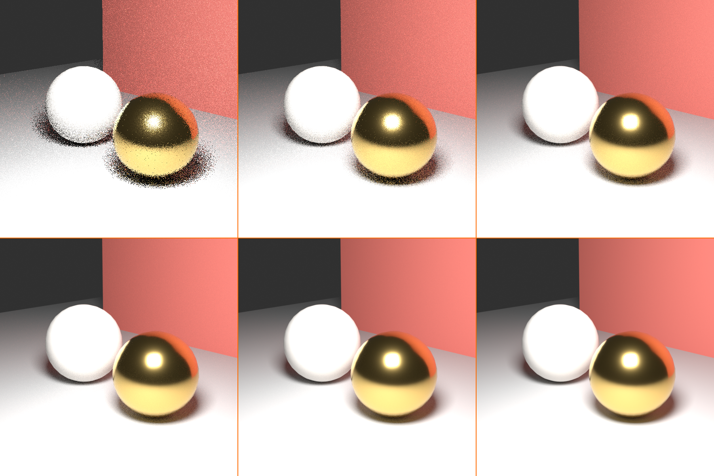
Modern solution - Denoising:
- AI-based noise removal
- Get clean results with fewer samples
- 256 samples + denoising ≈ 2048 samples quality
- Dramatically faster renders
- We'll cover this in detail later
When Path Tracing Excels
✅ Perfect Use Cases for Cycles
Cycles is ideal for:
- Photorealistic stills:
- Product visualization
- Architectural renders
- Hero shots and portfolio pieces
- Complex materials:
- Glass, water, crystal
- Realistic metal and chrome
- Subsurface materials (skin, wax, marble)
- Accurate lighting scenarios:
- Architectural lighting studies
- Product photography matching
- Scientific visualization
- Complex light effects:
- Caustics (light through glass)
- Indirect lighting importance
- Color bleeding and bounces
- When time allows:
- Single frames or short sequences
- Final hero shots
- Quality priority over speed
⚙️ How Cycles Works
Understanding Cycles' rendering process helps you make better decisions about settings and optimization. Let's peek under the hood.
The Rendering Process
🔄 Step-by-Step Breakdown
What happens when you hit F12:
- Scene preparation:
- Cycles loads geometry, materials, textures
- Builds acceleration structures (BVH tree)
- Prepares shader nodes for evaluation
- Tile rendering:
- Image divided into tiles (squares)
- Each tile rendered independently
- Allows parallel processing
- Progress visible as tiles complete
- Per-pixel sampling:
- For each pixel: Shoot multiple rays (samples)
- Each ray bounces through scene
- Collects color/light information
- Average all samples = final pixel color
- Progressive refinement:
- Render preview updates as samples increase
- Image gets cleaner over time
- Can stop early if looks good enough
- Denoising (optional):
- After sampling complete
- AI removes remaining noise
- Final clean image produced
Light Path Fundamentals
🌈 Understanding Light Bounces
What is a light path?
- The journey a ray takes through your scene
- Camera → Surface → Surface → Light
- Each interaction = a "bounce"
- More bounces = more indirect light
Types of bounces:
- Diffuse bounce: Ray hits matte surface, scatters randomly
- Glossy bounce: Ray hits shiny surface, reflects
- Transmission bounce: Ray passes through transparent material
- Volume scatter: Ray scatters in fog/smoke
Example light path:
- Camera → Glossy (mirror) → Diffuse (wall) → Glossy (floor) → Light
- 4 bounces total
- Picks up colors and reflections along the way
- Final pixel color = accumulated result
Why bounce limits matter:
- Each bounce takes computation time
- More bounces = more accurate indirect light
- But also slower rendering
- Need to balance accuracy vs speed
GPU vs CPU Architecture
🖥️ Hardware Differences
CPU rendering:
- Uses computer processor (general purpose)
- Fewer cores (typically 4-16)
- Each core very powerful
- Better for complex scenes with lots of memory
- Can use system RAM (more available memory)
- Reliable but slower for most tasks
GPU rendering:
- Uses graphics card (specialized for parallel tasks)
- Thousands of small cores
- Each core less powerful individually
- Excellent for path tracing (many parallel samples)
- Limited by GPU memory (VRAM)
- Typically 3-10x faster than CPU
Which to use:
- GPU (default choice): Faster for most scenes
- CPU: When scene exceeds GPU memory
- Both: Can use CPU + GPU together (rare)
Memory Management
💾 Understanding Memory Usage
What uses memory in Cycles:
- Geometry: Meshes, curves, vertices
- Textures: Image files (biggest consumer)
- Acceleration structures: BVH tree for ray intersection
- Shader compilation: Materials and nodes
GPU memory limitations:
- Graphics cards have 4-24GB VRAM typically
- Scene must fit entirely in VRAM
- If exceeds VRAM: Fallback to CPU or crash
- Optimization crucial for GPU rendering
CPU memory:
- Can use system RAM (16-128GB+)
- Much more memory available
- Better for huge scenes
- But slower overall render speed
⚙️ Cycles Basic Settings
Let's configure Cycles for optimal results. Understanding these settings helps you balance quality and render time effectively.
Accessing Cycles Settings
🎛️ Where to Find Controls
Location:
- Properties panel (right side) → Render Properties (camera icon)
- Top dropdown: Select "Cycles"
- Settings organized in collapsible sections
Key sections you'll use:
- Sampling: Quality control (samples, noise threshold)
- Light Paths: Bounce limits and optimization
- Film: Transparency and exposure
- Performance: Tile size and memory
- Curves: Render settings for hair/curves
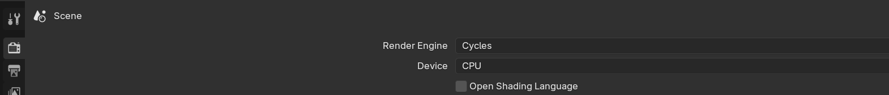
Switching to Cycles
🔄 Activating Cycles Render Engine
Step-by-step:
- Properties panel → Render Properties (camera icon)
- Top dropdown shows current engine
- Click dropdown → Select "Cycles"
- Settings immediately change to Cycles options
Device selection:
- Render Properties → Device dropdown
- GPU Compute: Use graphics card (recommended)
- CPU: Use processor (fallback option)
- Choose GPU for speed if available

Viewport rendering:
- Press
Zkey → Select "Rendered" - Viewport shows progressive Cycles rendering
- Updates continuously as samples increase
- Will be slower than Eevee (that's normal)
Render vs Viewport Settings
🎯 Two Quality Modes
Viewport rendering (interactive):
- Lower quality for fast preview
- Separate sample count
- Use while working on scene
- Default: Much fewer samples than render
Final rendering (F12):
- High quality for final output
- Higher sample count
- All effects enabled
- Use for final images
Why two modes:
- Viewport: Fast feedback while working (32-128 samples)
- Render: Clean result for final output (256-4096 samples)
- Lets you work efficiently without waiting
- Switch to final settings only when ready
Render Device Configuration
🖥️ GPU and CPU Setup
Preferences setup (one-time):
- Edit menu → Preferences
- System tab
- Cycles Render Devices section
- Select available devices:
- Check your GPU(s)
- Optionally check CPU
- Save Preferences
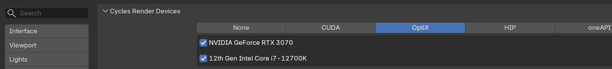
GPU options by manufacturer:
- NVIDIA: OptiX (fastest, recommended), CUDA, or HIP
- AMD: HIP
- Intel: oneAPI
- Apple Silicon: Metal (M1/M2/M3 Macs)
Per-scene device selection:
- Render Properties → Device
- Choose GPU Compute or CPU per project
- Usually leave on GPU Compute
Performance Settings
⚡ Speed and Memory Controls
Tile size:
- Render Properties → Performance → Tiles
- Size of render tile squares
- GPU: Large tiles (256x256 or 512x512)
- CPU: Smaller tiles (32x32 or 64x64)
- Auto-detect usually works well
Acceleration structure:
- Performance → Acceleration Structure
- Embree: CPU optimization (faster)
- BVH: Default option
- Leave on default unless issues
Memory usage:
- Performance → Final Render → Use Tiling
- Renders in parts to save memory
- Enable if running out of VRAM
- Slight speed penalty but prevents crashes
Film Settings
🎬 Output Configuration
Transparent background:
- Render Properties → Film → Transparent
- Check to render background transparent
- Useful for compositing
- Save as PNG to preserve transparency
Exposure:
- Film → Exposure
- Brightness multiplier (0.0 = normal)
- Positive values = brighter
- Negative values = darker
- Adjust for overall scene brightness
Pixel filter:
- Film → Pixel Filter
- Type: Box, Gaussian, Blackman-Harris
- Controls anti-aliasing softness
- Gaussian (default) works well
- Width: 1.5px is good default
✅ Recommended Starting Settings
For most projects, begin with:
- Device: GPU Compute (if available)
- Render Samples: 256-512
- Viewport Samples: 32-64
- Max Bounces: 12 (default)
- Denoising: Enabled (OptiX or OpenImageDenoise)
- Tile Size: Auto
- Transparent: Disabled (unless compositing)
Adjust from here based on specific needs!
🎲 Samples and Denoising
Samples are the heart of Cycles rendering. Understanding them—and how denoising revolutionizes the workflow—is essential for efficient, quality renders.
Understanding Samples
💡 What Are Samples?
Sample definition:
- One light path traced through the scene per pixel
- Each sample is slightly different (random)
- More samples = more paths = better average
- Result converges to "correct" color
Why randomness creates noise:
- Each sample takes a random path
- Some paths hit bright areas, some dark
- With few samples: High variation (noise/grain)
- With many samples: Average smooths out (clean)
Visual progression:
- 1-16 samples: Extremely noisy, barely recognizable
- 32-64 samples: Very noisy, but scene visible
- 128-256 samples: Noisy but usable (with denoising)
- 512-1024 samples: Clean, minimal noise
- 2048-4096+ samples: Very clean, production quality
Real-world analogy:
- Imagine polling people about favorite color
- Ask 10 people: Results vary wildly (noisy)
- Ask 1000 people: Clear trend emerges (clean)
- Samples work the same way—more = better average
Sample Count Guidelines
🎯 How Many Samples Do You Need?
Without denoising (old workflow):
- Draft preview: 64-128
- Clean result: 1024-2048
- Production quality: 2048-4096
- Glass/caustics: 4096-8192+
With denoising (modern workflow):
- Draft preview: 32-64
- Good quality: 128-256
- High quality: 512-1024
- Maximum quality: 1024-2048
- Denoising reduces needed samples by 4-8x!
Scene complexity affects samples needed:
- Simple: Direct lighting, few bounces (lower samples)
- Moderate: Indirect lighting, some glass (medium samples)
- Complex: Lots of glass, caustics, volumes (higher samples)
Render Samples Setting
⚙️ Configuring Samples
Location:
- Render Properties → Sampling
- Two main settings: Render and Viewport
Render samples:
- For final render (F12)
- Recommendation: 256-512 with denoising
- Higher for glass-heavy scenes
- Test render to see if enough
Viewport samples:
- For interactive preview (Rendered mode)
- Recommendation: 32-128
- Lower = faster updates while working
- Doesn't affect final render
Time Limit (alternative):
- Can set time instead of sample count
- Renders for specified minutes/seconds
- Useful when deadline matters more than sample count
- Automatically stops when time reached
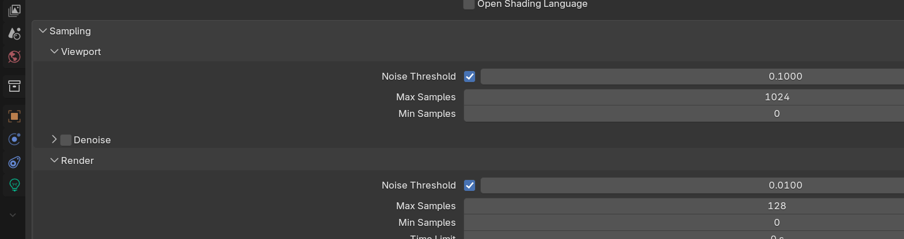
Denoising Technology
🧹 AI-Powered Noise Removal
What is denoising?
- AI algorithm removes noise from render
- Trained on millions of renders
- Distinguishes detail from noise
- Preserves edges and important features
Why denoising is revolutionary:
- 256 samples + denoise ≈ 2048 samples clean
- Renders 8x faster for similar quality
- Changed professional workflows
- Now standard in production
Denoising options in Blender:
- OptiX (NVIDIA only):
- Fastest, highest quality
- GPU-accelerated
- Requires RTX graphics card
- Best choice if available
- OpenImageDenoise (Intel):
- Excellent quality
- Works on any hardware
- Slightly slower than OptiX
- Best for AMD/non-NVIDIA
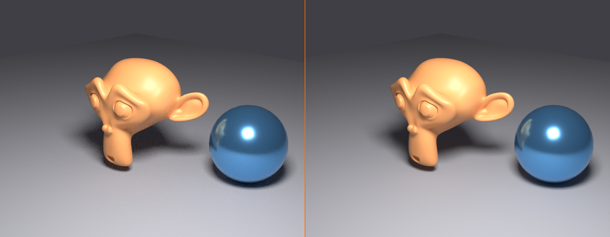
Enabling and Configuring Denoising
⚙️ Denoising Setup
Enabling denoising:
- Render Properties → Sampling → Denoising
- Check "Render" checkbox
- Select denoiser:
- OptiX (if NVIDIA RTX GPU)
- OpenImageDenoise (all others)
Viewport denoising:
- Separate "Viewport" checkbox in same section
- Denoises interactive viewport rendering
- Helps see cleaner preview
- Slight performance cost
- Recommendation: Enable for cleaner preview
Denoising settings:
- Denoising Data:
- Passes used by denoiser
- Default (Albedo + Normal) works well
- More data = better quality, slightly slower
- Prefilter:
- Preprocessing before denoising
- Options: None, Fast, Accurate
- Accurate = best quality (slightly slower)
When denoising struggles:
- Very low samples (under 64) may look blurry
- Fine details might get smoothed
- Complex caustics may blur
- Solution: Increase samples if denoising not enough
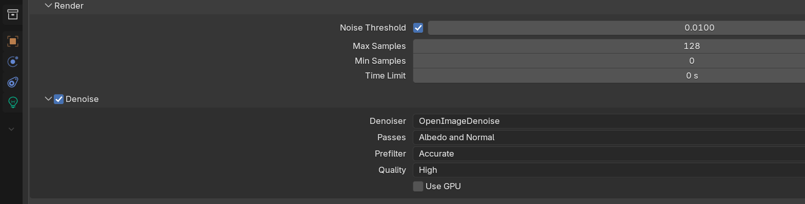
Adaptive Sampling
🎯 Smart Sample Distribution
What is adaptive sampling?
- Cycles detects when pixels are clean enough
- Stops sampling those pixels early
- Focuses samples on noisy areas
- Automatic optimization
How it works:
- Some pixels clean up faster (solid colors)
- Others need more samples (complex lighting)
- Adaptive sampling allocates efficiently
- Can save 20-40% render time
Enabling adaptive sampling:
- Render Properties → Sampling → Adaptive Sampling
- Check "Use Adaptive Sampling"
- Usually enabled by default
Settings:
- Noise Threshold:
- How clean pixel must be to stop sampling
- Default: 0.01 (good balance)
- Lower = cleaner but slower (0.001)
- Higher = faster but noisier (0.1)
- Min Samples:
- Minimum samples every pixel gets
- Default: 0 (start evaluating immediately)
- Increase if seeing artifacts
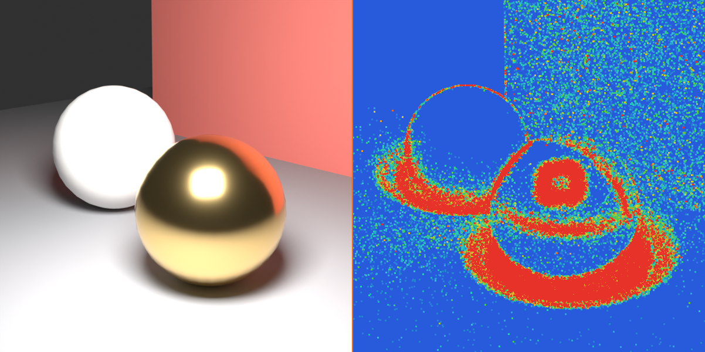
✅ Modern Cycles Sampling Workflow
The optimal setup for 2024+:
- Render Samples: 256-512
- Denoising: Enabled (OptiX or OpenImageDenoise)
- Adaptive Sampling: Enabled
- Noise Threshold: 0.01
This gives clean results in reasonable time. Increase samples only if denoising isn't enough!
💡 The Denoising Revolution: Before denoising became standard (around 2017), professional Cycles renders needed 2000-4000 samples for clean results. A single HD frame could take 30-60 minutes. Denoising changed everything—now 256 samples + denoising takes 5-10 minutes with comparable quality. This wasn't just an incremental improvement; it made Cycles practical for projects that were previously time-prohibitive. The entire industry shifted workflows. If you're still rendering without denoising, you're working 5-10x harder than necessary.
🌈 Light Paths and Bounces
Light paths control how rays bounce through your scene. Understanding bounces is key to balancing quality, realism, and render speed.
Understanding Bounces
💡 What Are Light Bounces?
Bounce definition:
- Each time a light ray hits a surface = one bounce
- Ray continues traveling after bounce (indirect light)
- Picks up color and light information
- Eventually hits light source or dies out
Why bounces matter:
- 0 bounces: Black render (no light reaches camera)
- 1 bounce: Direct lighting only (flat, unrealistic)
- 2-4 bounces: Indirect lighting, color bleeding begins
- 8-12 bounces: Realistic indirect light (recommended)
- Unlimited bounces: Maximum realism but slower
Real-world example:
- Bounce 0: Ray starts from camera
- Bounce 1: Ray hits white table (direct light)
- Bounce 2: Ray bounces to red wall (picks up red)
- Bounce 3: Ray bounces to ceiling (ambient light)
- Bounce 4: Ray hits light source
- Result: Table has subtle red tint from wall (color bleeding)
Light Path Settings
⚙️ Configuring Bounce Limits
Location: Render Properties → Light Paths
Max Bounces (main control):
- Total bounces allowed for any ray
- Default: 12 (good for most scenes)
- Higher = more indirect light (but slower)
- Lower = faster but less realistic
Individual bounce types:
- Diffuse bounces:
- Matte surface reflections
- Most important for indirect lighting
- Default: 4 (sufficient for most)
- Increase to 8 for complex interiors
- Glossy bounces:
- Reflective surface reflections
- Mirrors, metals, polished surfaces
- Default: 4
- Increase to 8-12 for mirror rooms
- Transmission bounces:
- Light passing through transparent materials
- Glass, water, crystal
- Default: 12
- Important for realistic glass
- Lower if no transparency in scene
- Volume bounces:
- Light scattering in fog/smoke
- Default: 0 (disabled)
- Increase to 2-4 if using volumes
- Very slow, use sparingly
- Transparent bounces:
- Special transparent shader bounces
- Different from Transmission
- Default: 8
- Usually leave as-is
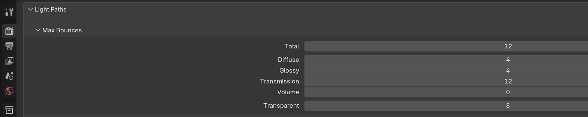
Bounce Recommendations by Scene
🎯 Optimal Settings for Different Projects
Outdoor scene (direct light dominates):
- Max Bounces: 8
- Diffuse: 2
- Glossy: 4
- Transmission: 8
- Why: Sun provides most light, less indirect needed
Interior scene (indirect light important):
- Max Bounces: 12-16
- Diffuse: 6-8
- Glossy: 4-6
- Transmission: 12
- Why: Light bounces through room multiple times
Product shot (simple lighting):
- Max Bounces: 8
- Diffuse: 3
- Glossy: 6
- Transmission: 12
- Why: Controlled lighting, focus on object reflections
Glass-heavy scene:
- Max Bounces: 16
- Diffuse: 4
- Glossy: 8
- Transmission: 16
- Why: Light passes through glass many times
Speed priority (draft render):
- Max Bounces: 4
- Diffuse: 2
- Glossy: 2
- Transmission: 4
- Why: Minimal bounces for fastest result
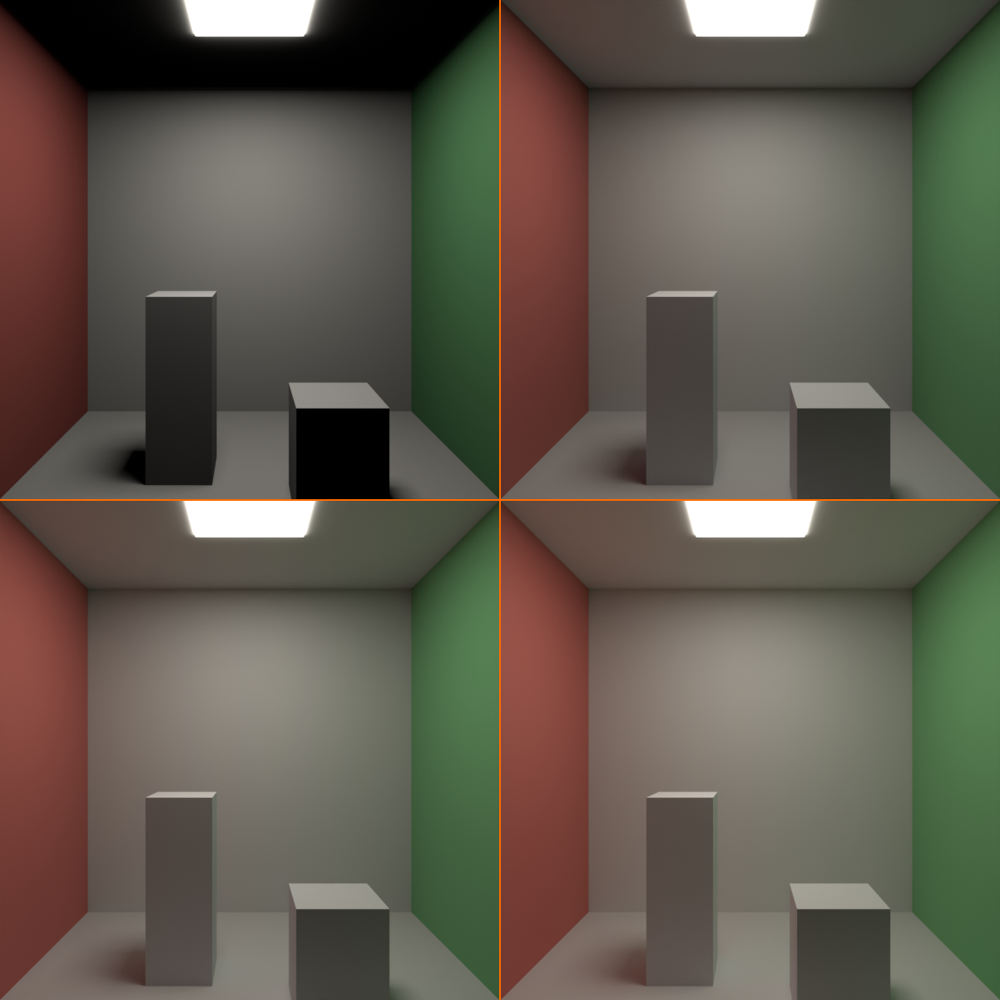
Clamping
🔒 Limiting Brightness Extremes
What is clamping?
- Limits maximum brightness of samples
- Reduces fireflies (bright pixel artifacts)
- Caps extremely bright reflections/caustics
- Trade-off: Slightly less accurate but cleaner
Clamping settings:
- Direct clamp:
- Limits direct light brightness
- Default: 0 (no limit)
- Set to 10-20 if bright fireflies visible
- Indirect clamp:
- Limits indirect light brightness
- Default: 10.0 (some limiting)
- Lower (3-5) for aggressive firefly reduction
- 0 = no limit (more accurate but noisier)
When to use clamping:
- Seeing bright pixel fireflies in render
- Caustics creating noise spikes
- Small bright lights causing issues
- Want cleaner result with fewer samples
When to avoid clamping:
- Need accurate caustics
- Rendering HDR images (need full range)
- Can afford enough samples to clean naturally
Light Path Optimization
⚡ Speed Improvements
Fast GI Approximation:
- Render Properties → Light Paths → Fast GI Approximation
- Checkbox: "Reflective Caustics" and "Refractive Caustics"
- When unchecked: Skips caustics (faster)
- Use when: Don't need caustics in scene
- Can cut render time 20-40% if lots of glass
Filter Glossy:
- Light Paths → Filter Glossy
- Softens glossy reflections slightly
- Reduces noise from sharp reflections
- Value: 0.0-1.0 (higher = more blur)
- Use: 0.5-1.0 for slightly softer, cleaner reflections
Min Light Bounces:
- Minimum bounces before Russian roulette termination
- Default: 0
- Increase to 3 if seeing premature light cut-off
- Usually leave at default
💡 The Bounce Balance: More bounces = more realism, but there's a point of diminishing returns. The difference between 4 and 8 diffuse bounces is noticeable. The difference between 12 and 24? Barely visible but twice as slow. Professional artists typically use 4-8 diffuse bounces, 4-8 glossy, and 12 transmission. Going higher is academic perfection that viewers won't notice. Know when enough is enough—your deadline will thank you.
💎 Caustics and Complex Lighting
Caustics are one of path tracing's signature effects—beautiful light patterns that are nearly impossible in real-time engines but natural in Cycles.
Understanding Caustics
✨ What Are Caustics?
Caustic definition:
- Focused light patterns from reflection/refraction
- Light concentrated by curved surfaces
- Example: Light ripples on pool bottom
- Visible on surfaces receiving the focused light
Types of caustics:
- Refractive caustics:
- Light passing through transparent objects
- Glass of water, crystal, lenses
- Creates bright focused spots
- Most common type
- Reflective caustics:
- Light bouncing off curved shiny surfaces
- Chrome, polished metal, mirrors
- Creates light patterns on nearby surfaces
- Less common but striking
Real-world caustic examples:
- Sunlight through water glass onto table
- Pool water reflections dancing on walls
- Wine glass creating bright spots
- Jewelry reflecting light patterns
- Car chrome reflecting onto ground
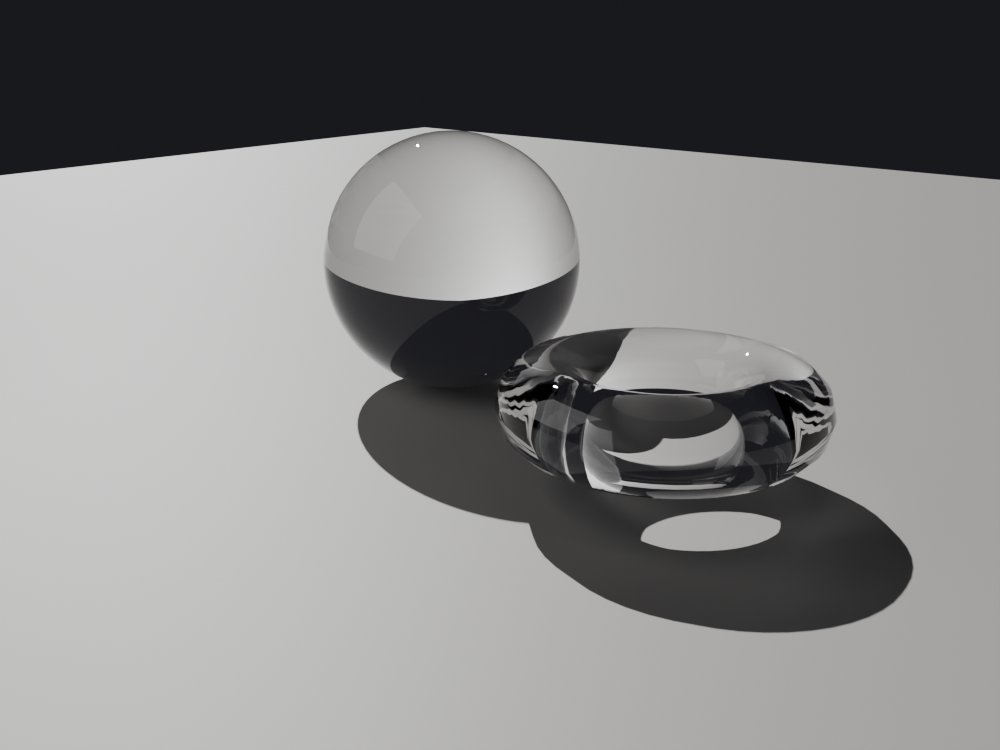
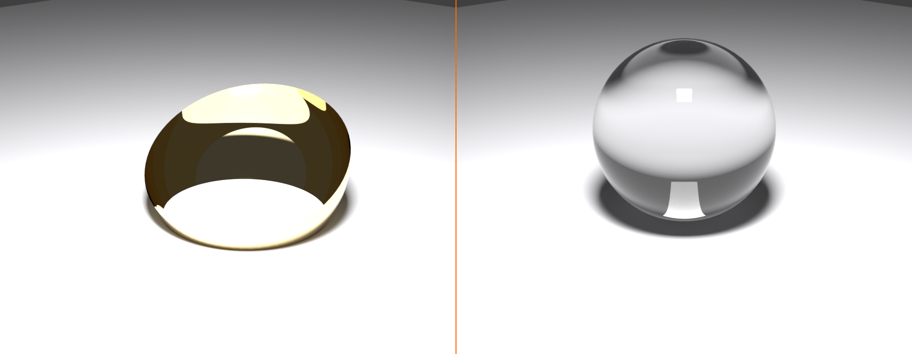
Enabling Caustics in Cycles
⚙️ Caustics Settings
Location: Render Properties → Light Paths
Caustics controls:
- Reflective Caustics:
- Checkbox under "Fast GI Approximation"
- Check to enable mirror/metal caustics
- Uncheck to skip (faster render)
- Refractive Caustics:
- Checkbox under "Fast GI Approximation"
- Check to enable glass/water caustics
- Uncheck to skip (faster render)
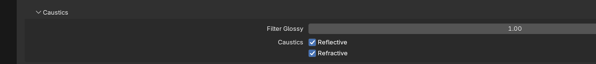
Default behavior:
- Both caustics enabled by default
- Cycles renders them automatically
- No special setup needed beyond enable
Performance impact:
- Caustics are computationally expensive
- Require many samples to clean up
- Can increase render time 2-5x
- Disable if not needed in scene
Creating Quality Caustics
💎 Setup for Best Results
Scene requirements:
- Glass object:
- Principled BSDF with Transmission: 1.0
- IOR appropriate for material (glass: 1.45)
- Low roughness (0.0-0.1) for clear glass
- Strong light source:
- Sun light works best (parallel rays)
- Or strong area/point light
- Weak lights = weak caustics
- Receiving surface:
- Diffuse surface to catch caustics
- Table, floor, wall
- Light colors show caustics better
Sample requirements:
- Caustics are very noisy
- Need high samples: 1024-4096
- Or use clamping to reduce fireflies
- Denoising helps but may blur fine detail
Optimization tips:
- Use Indirect Clamp (3-10) to reduce fireflies
- Increase Transmission bounces (12-16)
- Position light for best caustic pattern
- Adjust glass shape for desired effect
Subsurface Scattering
🕯️ Light Penetrating Materials
What is subsurface scattering (SSS)?
- Light enters material, scatters inside, exits
- Creates soft, glowing appearance
- Essential for organic materials
- Cycles handles automatically with Principled BSDF
Materials that need SSS:
- Skin: Most important use case
- Wax: Candles, waxy surfaces
- Marble: Translucent stone
- Leaves: Backlit foliage
- Milk/liquid: Cloudy fluids
- Jade/gemstones: Some semi-transparent stones
SSS setup in Principled BSDF:
- Subsurface: 0.0-1.0 (strength)
- Subsurface Radius: RGB values
- How far light travels in R, G, B channels
- Skin: (1.0, 0.2, 0.1) typical
- Wax: (2.5, 1.5, 1.0) typical
- Subsurface Color: Interior material color
Performance note:
- SSS increases render time
- More noticeable with high subsurface values
- Use only on materials that need it
- Denoising helps clean SSS noise
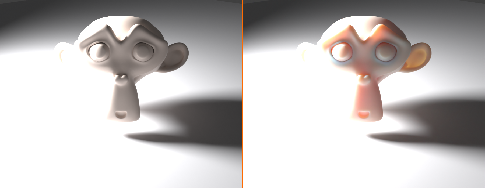
Volume Rendering
☁️ Fog, Smoke, and Atmospheric Effects
What are volumes?
- 3D space filled with participating media
- Fog, smoke, clouds, fire, explosions
- Light scatters and absorbs through volume
- Creates atmospheric depth
Volume setup basics:
- Add cube or domain object
- Material Properties → Volume tab
- Add Volume Scatter or Volume Absorption shader
- Adjust density and color
Volume rendering is slow:
- Each ray must march through volume
- Many steps = many calculations
- Can increase render time 5-10x
- Use sparingly and optimize carefully
Volume optimization:
- Light Paths → Volume Bounces: Keep low (0-2)
- Lower volume sample steps if possible
- Use smaller volume domains
- Consider Eevee for animation with volumes
When volumes are worth it:
- God rays (light beams through windows)
- Atmospheric depth in large scenes
- Smoke/fire simulations (special effects)
- Underwater murky water
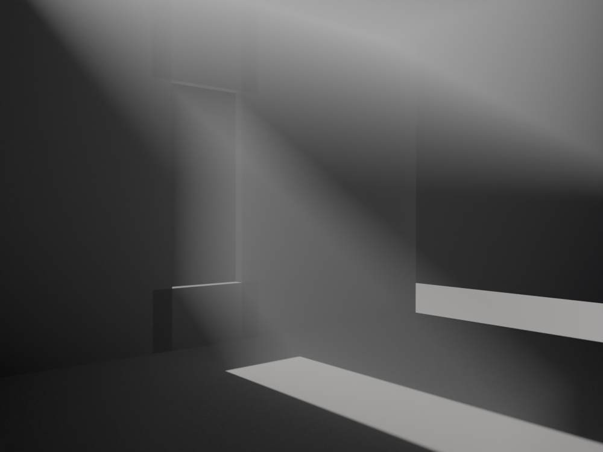
⚠️ Caustics and Complexity Warning
Be strategic about complex effects:
- Caustics look beautiful but are render-expensive
- Only enable if caustics will be visible in shot
- Small, subtle caustics may not be worth 2x render time
- Volumes can explode render times—test early
- SSS is moderate cost—use freely where needed
- Ask: "Does this effect improve the image enough to justify the time?"
🖥️ GPU vs CPU Rendering
Choosing between GPU and CPU rendering significantly impacts your speed. Let's understand when to use each.
Detailed Comparison
📊 GPU vs CPU Deep Dive
| Aspect | GPU | CPU |
|---|---|---|
| Speed | ⚡ 3-10x faster | Slower but reliable |
| Memory limit | 4-24GB VRAM | 16-128GB+ RAM |
| Large scenes | Limited by VRAM | ✅ Better for huge scenes |
| Availability | Needs compatible GPU | ✅ Always available |
| Power usage | High (200-450W) | Moderate (65-150W) |
| Noise/heat | GPU fans loud | Quieter |
| Cost | Expensive GPUs faster | Standard CPUs adequate |
| Multitasking | GPU busy during render | Can use some threads |
When to Use GPU
⚡ GPU Rendering (Default Choice)
Use GPU when:
- ✅ Scene fits in VRAM (check statistics)
- ✅ Speed is priority
- ✅ Moderate scene complexity
- ✅ Standard materials and textures
- ✅ Deadline approaching
- ✅ Iterating and testing
GPU recommendations by brand:
- NVIDIA RTX series:
- Best Cycles performance
- OptiX denoising (fastest)
- RTX 3060 (12GB): Good entry level
- RTX 4070/4080: Excellent mid-range
- RTX 4090: Maximum performance
- AMD Radeon:
- HIP backend in Blender
- Good performance, improving
- Often better VRAM for price
- RX 7900 series: Strong option
- Apple Silicon (M1/M2/M3):
- Metal backend
- Excellent performance for Macs
- Unified memory helps
- M3 Max/Ultra: Very capable
When to Use CPU
🖥️ CPU Rendering (Special Cases)
Use CPU when:
- ✅ Scene exceeds GPU memory
- ✅ Very high-resolution textures (8K+)
- ✅ Extremely complex geometry
- ✅ GPU not available or old
- ✅ Need to use computer while rendering
- ✅ Overnight renders (power/noise concerns)
CPU optimization:
- Use all available CPU threads
- Smaller tile size (32x32 or 64x64)
- Close other applications
- Monitor temperature (CPU can throttle if too hot)
CPU thread allocation:
- Render Properties → Performance → Threads
- Auto-detect uses all threads
- Can manually set if want to reserve some
- More threads = faster render (linear scaling)
Checking Memory Usage
💾 Monitoring Scene Size
Before rendering, check memory:
- Top menu: Window → Toggle System Console (Windows)
- Or check Blender Info area
- Start render (F12)
- Console shows memory statistics:
- Total geometry size
- Texture memory
- BVH structure size
- Peak memory usage
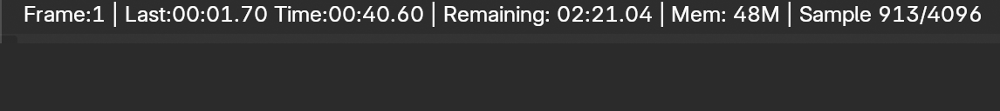
Memory troubleshooting:
- If approaching GPU limit:
- Reduce texture resolutions
- Decimate geometry
- Use instancing
- Or switch to CPU
- Out of memory error:
- Scene definitely too large
- Must optimize or use CPU
- Or render in smaller resolution, upscale
Hybrid Rendering
🔄 Using GPU + CPU Together
Can you use both?
- Yes, but rarely beneficial
- Enable both in Preferences → System
- Cycles will use GPU + CPU
Reality of hybrid:
- CPU much slower than GPU
- Often only 10-20% faster than GPU alone
- CPU generates heat and noise
- Usually not worth it
- Exception: Weak GPU + strong CPU
Recommendation:
- Use GPU alone in most cases
- Save CPU for other tasks
- Only add CPU if every second counts
⚡ Optimization Strategies
Cycles can be slow, but smart optimization makes it practical. Let's learn how to maximize speed without sacrificing quality.
The Optimization Mindset
🎯 Strategic Optimization
The fundamental principle:
- Identify bottlenecks first (what's slowing you down?)
- Optimize highest-impact areas
- Don't waste time on minor optimizations
- Balance quality vs speed for your needs
Common bottlenecks in order:
- Too many samples: Most common issue
- High polygon count: Complex geometry
- Large textures: Memory and loading time
- Excessive bounces: More calculation per sample
- Caustics/volumes: Expensive effects
- Inefficient lighting: Difficult light paths
The 80/20 rule:
- 20% of optimizations give 80% of speed improvement
- Focus on: Samples, denoising, bounces, geometry
- These have biggest impact
Sample Optimization
🎲 Getting Most from Fewer Samples
Use denoising (critical!):
- 256 samples + denoise ≈ 2048 samples without
- Single biggest optimization
- Enable OptiX or OpenImageDenoise
- If not using denoising, start here
Adaptive sampling (automatic optimization):
- Enable in Sampling section
- Stops sampling clean pixels early
- Can save 20-40% render time
- No quality loss
Test renders at lower samples:
- Render at 128 samples first
- Check if denoising handles it
- Only increase if quality insufficient
- Don't assume you need 1024+
Use time limit for tests:
- Sampling → Time Limit
- Set to 2-5 minutes for tests
- See result without waiting forever
- Good for rapid iteration
Geometry Optimization
📐 Reducing Polygon Load
Subdivision optimization:
- Don't over-subdivide models
- Use Subdivision Surface render level wisely:
- Close-up: Level 2-3
- Mid-distance: Level 1-2
- Background: Level 0-1
- Viewport level can be lower than render
Instancing for repeated objects:
- Use
Alt+Dfor linked duplicates - Instances share geometry in memory
- 1000 instanced trees = memory of 1 tree
- Massive memory savings
- Example: Grass, trees, crowd, architecture details
Level of Detail (LOD):
- Use simpler geometry for distant objects
- Create low-poly versions for background
- Viewers won't notice simplified distant models
- Can halve geometry count
Remove invisible geometry:
- Delete faces inside objects (never visible)
- Remove objects outside camera view
- Disable objects not in shot from render
- Camera icon in Outliner to disable rendering
Texture Optimization
🖼️ Memory-Efficient Textures
Resolution strategy:
- Close to camera: 2K-4K textures
- Mid-distance: 1K-2K textures
- Background: 512-1K textures
- Don't use 4K everywhere by default
Texture format:
- JPG: Good for color maps (smaller files)
- PNG: When need transparency
- EXR: For HDR images only
- Compression reduces file size and memory
Texture sharing:
- Reuse same texture across multiple objects
- One texture in memory, multiple uses
- Example: Brick texture on multiple walls
Procedural textures:
- Consider procedural instead of image textures
- Zero memory usage (calculated on-the-fly)
- Good for: Noise, patterns, simple textures
- Slight render cost but saves memory
Light Path Optimization
🌈 Bounce Reduction
Reduce bounces strategically:
- Test at lower bounces (Max: 4-6)
- Compare to default (Max: 12)
- If looks similar, use lower
- Outdoor scenes often need fewer bounces
Disable unused bounce types:
- No glass in scene? Lower Transmission to 4
- No volumes? Keep Volume bounces at 0
- Simple materials? Lower Glossy to 2
Disable caustics if not visible:
- Light Paths → Uncheck Reflective/Refractive Caustics
- Can save 20-50% render time
- Only enable if caustics important to shot
Use clamping:
- Indirect Clamp: 3-10
- Reduces fireflies without many more samples
- Slight accuracy loss but much cleaner
Lighting Optimization
💡 Efficient Light Setup
Limit light count:
- More lights = longer render (each adds calculation)
- Use 2-4 lights when possible
- HDRI + 1-2 manual lights often sufficient
Use efficient light types:
- Sun light: Most efficient (single direction)
- Point light: Moderate cost
- Spot light: Moderate cost
- Area light: Higher cost (especially large)
- Mesh lights (emission): Most expensive
Portal lights for interiors:
- Place area lights at windows
- Light Properties → Enable "Portal"
- Helps Cycles find light paths efficiently
- Dramatically speeds up interior renders
Multiple Importance Sampling (MIS):
- Automatically enabled in Cycles
- Efficiently samples lights and materials
- Just make sure lights have reasonable strength
- Extremely bright or dim lights reduce efficiency
Render Region
🎯 Partial Rendering for Tests
What is render region?
- Render only part of image
- Test lighting/materials on small area
- Much faster than full frame
Using render region:
- Enter camera view (
Numpad 0) - Press
Ctrl+B - Draw box around area to render
- Press
F12to render only that region - Press
Ctrl+Alt+Bto clear region
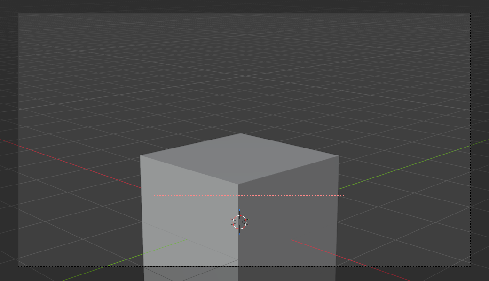
When to use render region:
- Testing material on one object
- Checking lighting on specific area
- Iterating on small detail
- Can test in seconds instead of minutes
Resolution and Output
📐 Smart Resolution Strategy
Test at lower resolution:
- Properties → Output → Resolution
- Test at 50% resolution (slider below)
- Renders 4x faster
- Check lighting and composition
- Only render full resolution when ready
Resolution percentage:
- 100% = Full resolution
- 50% = Quarter the pixels (4x faster)
- 25% = 1/16 the pixels (16x faster)
- Use for rapid iteration
Render smaller, upscale:
- Render at 80-90% resolution
- Upscale in post (Photoshop, etc.)
- Modern AI upscalers work well
- Can save 20-30% render time
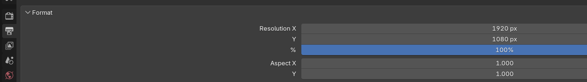
✅ Quick Optimization Checklist
If render is too slow, try these in order:
- Enable denoising (biggest impact)
- Enable adaptive sampling
- Reduce samples to 256-512
- Test at 50% resolution
- Lower bounce counts (try Max: 8)
- Disable caustics if not visible
- Use instancing for repeated objects
- Reduce texture resolutions
- Switch to GPU if on CPU
- Use render region for tests
First 3 items solve 80% of speed issues!
🔧 Troubleshooting Cycles
Even experienced artists encounter Cycles issues. Here are solutions to the most common problems.
Render Issues
⚠️ Problem: Render is completely black
Common causes and fixes:
- No lights in scene:
- Cycles requires light sources
- Add at least one light or HDRI
- Check lights aren't disabled
- Light strength too low:
- Increase light power (try 100W+)
- HDRI strength too low (increase to 1.0+)
- Camera inside object:
- Camera clipping or enclosed
- Move camera outside geometry
- Max bounces too low:
- Light can't reach camera
- Increase Max Bounces to 8-12
Noise and Quality
⚠️ Problem: Render too noisy/grainy
Solutions in order of effectiveness:
- Enable denoising:
- Sampling → Denoising → Render (check)
- Select OptiX or OpenImageDenoise
- Biggest improvement for least time
- Increase samples:
- Try 512, then 1024 if still noisy
- With denoising, rarely need above 1024
- Use clamping:
- Light Paths → Indirect Clamp: 3-10
- Reduces fireflies significantly
- Simplify lighting:
- Complex lighting = more noise
- Add more/stronger lights
- Brighter scene = less noise
Fireflies (Bright Pixels)
⚠️ Problem: Bright white pixels scattered in render
What causes fireflies:
- Caustics creating bright spots
- Small bright lights
- Very shiny materials with low samples
- Statistical outliers in path tracing

Fixes (try in order):
- Use clamping: Indirect Clamp: 3-10 (most effective)
- Increase samples: More samples average out outliers
- Enable denoising: Removes most fireflies
- Disable caustics: If not needed in scene
- Filter Glossy: Light Paths → Filter Glossy: 1.0
- Reduce light size: Very large area lights can cause fireflies
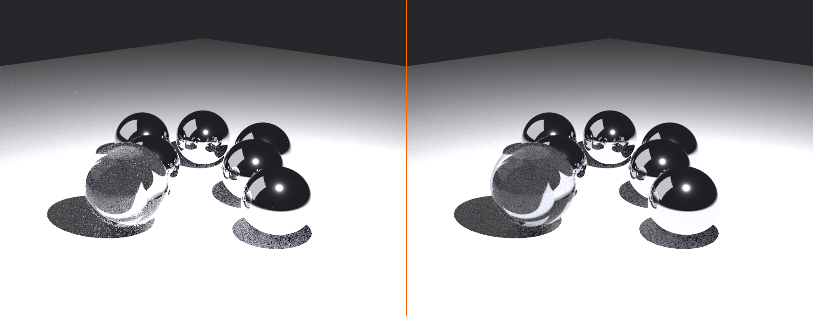
Memory Issues
⚠️ Problem: Out of memory errors
GPU memory exceeded:
- Switch to CPU rendering:
- Render Properties → Device: CPU
- Slower but uses system RAM
- Reduce texture sizes:
- 4K → 2K can halve memory usage
- Background objects: Use 1K textures
- Simplify geometry:
- Lower subdivision levels
- Use Decimate modifier
- Remove off-screen objects
- Use instancing:
- Linked duplicates share memory
- Can reduce memory 10-100x
- Enable tiling:
- Performance → Use Tiling
- Renders in parts to save memory
Glass and Transparency
⚠️ Problem: Glass looks wrong or black
Checklist for glass materials:
- Transmission: Should be 1.0 for clear glass
- IOR: 1.45 for glass (1.33 for water)
- Roughness: 0.0-0.1 for clear glass
- Transmission bounces: At least 12
- Max bounces: At least 12 total
- Refractive caustics: Enabled if needed
Glass rendering black:
- Not enough bounces for light to pass through
- Increase Transmission and Max Bounces
- Check object has thickness (not paper-thin)
Glass very noisy:
- Glass requires more samples (512-1024)
- Use clamping (Indirect: 5-10)
- Enable denoising
Render Speed
⚠️ Problem: Render taking forever
Progressive diagnosis:
- Check you're using GPU:
- Render Properties → Device: GPU Compute
- GPU is 3-10x faster than CPU
- Verify denoising enabled:
- Can render with 4-8x fewer samples
- Check sample count:
- Should be 256-512 with denoising
- Not 2048-4096
- Review bounce settings:
- Max Bounces: 8-12 sufficient usually
- 32+ bounces will be very slow
- Check for expensive effects:
- Volumes dramatically slow renders
- Many caustic objects slow renders
- Disable if not critical to shot
Viewport vs Render Differences
⚠️ Problem: Final render looks different from viewport
Why this happens:
- Viewport uses fewer samples (32-128)
- Final render uses more samples (256-4096)
- Different denoising or no denoising in viewport
- This is normal and expected
What to do:
- Increase viewport samples to match render
- Enable viewport denoising
- Or accept viewport is preview only
- Always do test render before final
✅ General Troubleshooting Process
When something's wrong:
- Start with simplest scene (default cube + light)
- Verify that renders correctly
- Add back complexity gradually
- Identify what causes the problem
- Check system console for error messages
- Update GPU drivers if render crashes
- Search Blender forums for specific errors
🎨 Project: Photorealistic Scene
Time to create a stunning photorealistic render using everything you've learned about Cycles!
Project Overview
🎯 Project Goals
What you'll create:
- Photorealistic product or object render
- Properly configured Cycles settings
- Optimized for quality and speed
- Using advanced materials (glass, metal, etc.)
- Professional lighting setup
Learning objectives:
- Complete Cycles rendering workflow
- Balancing samples and denoising
- Configuring light paths appropriately
- Creating photorealistic materials
- Optimization for practical render times
Time estimate: 60-75 minutes
Part 1: Scene Setup
🏗️ Building the Scene
Step 1: Choose your subject
- Option A: Glass object (vase, wine glass, bottle)
- Option B: Metal object (chrome sphere, jewelry)
- Option C: Mixed materials (watch, phone, product)
- Recommendation: Start with glass to practice transparency
Step 2: Model or import object
- Model simple object (use Edit Mode techniques from earlier lessons)
- Or use default objects (UV Sphere, Torus, Suzanne)
- Add thickness if glass (
Solidifymodifier) - Apply smooth shading (
Right-click → Shade Smooth)
Step 3: Add environment
- Ground plane:
Shift+A→ Mesh → Plane, Scale x10 - Background (optional): Another plane behind object
- Position camera for good composition
Part 2: Switch to Cycles
⚙️ Cycles Configuration
Step 1: Enable Cycles
- Render Properties → Render Engine: Cycles
- Device: GPU Compute (if available)
Step 2: Configure sampling
- Sampling:
- Render: 512
- Viewport: 64
- Enable Adaptive Sampling
- Noise Threshold: 0.01
- Denoising:
- Enable Render checkbox
- OptiX (NVIDIA) or OpenImageDenoise
- Enable Viewport checkbox
Step 3: Configure light paths
- Light Paths:
- Max Bounces: 12
- Diffuse: 4
- Glossy: 6
- Transmission: 12 (important for glass)
- Volume: 0
- Clamping:
- Indirect: 5.0 (reduce fireflies)
Step 4: Switch to rendered viewport
Z→ Rendered- See progressive Cycles rendering
Part 3: Create Materials
🎨 Photorealistic Materials
Glass material setup:
- Select glass object → Material Properties
- Add material → Principled BSDF
- Settings:
- Base Color: Slight tint (optional)
- Metallic: 0.0
- Roughness: 0.0 (perfectly clear)
- Transmission: 1.0
- IOR: 1.45
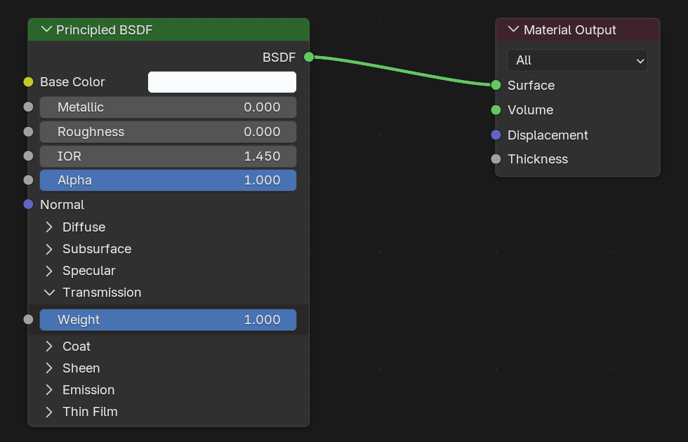
Metal material setup (if using):
- Principled BSDF settings:
- Base Color: Metallic color
- Metallic: 1.0
- Roughness: 0.1-0.3 (polished)
- Clear Coat: 0.5 (optional, for extra shine)
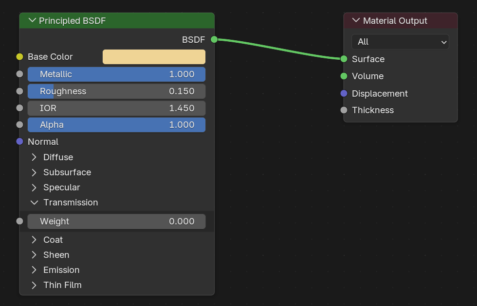
Ground plane material:
- Base Color: Light gray or white
- Roughness: 0.7 (mostly matte)
- Simple diffuse surface
Part 4: Professional Lighting
💡 Three-Point Lighting Setup
Step 1: Key light
Shift+A→ Light → Area Light- Position: Above and to side of object
- Settings:
- Power: 100-150W
- Size: 2-3 meters (both X and Y)
- Color: Slightly warm white
- Aim at object (select light,
Alt+Rto clear rotation, then rotate)
Step 2: Fill light
- Add another Area Light
- Position: Opposite side, lower
- Settings:
- Power: 30-50W (weaker than key)
- Size: 3-4 meters (softer)
Step 3: Rim light (optional)
- Add Point or Area Light
- Position: Behind object
- Settings:
- Power: 50-100W
- Slightly cool color
- Creates edge highlight
Step 4: Adjust lighting
- Watch rendered viewport
- Adjust light positions and strength
- Object should be well-lit with form visible
- Glass should show beautiful refraction
Part 5: Test and Optimize
🧪 Iterative Testing
Step 1: Test render at low samples
- Set samples to 128
F12to render- Check:
- Composition good?
- Lighting working?
- Materials correct?
- Denoising handling noise?
Step 2: Increase samples if needed
- If still noisy after denoising: Try 256
- Glass usually needs 512-1024 for clean result
- Test progressively, don't jump to 4096
Step 3: Check render time
- Note time in render window
- Too long? Review optimization section
- Consider:
- Lowering bounces
- Using render region
- Reducing resolution for tests
Step 4: Refine
- Adjust lighting based on test
- Tweak material roughness
- Fine-tune camera angle
- Test render again
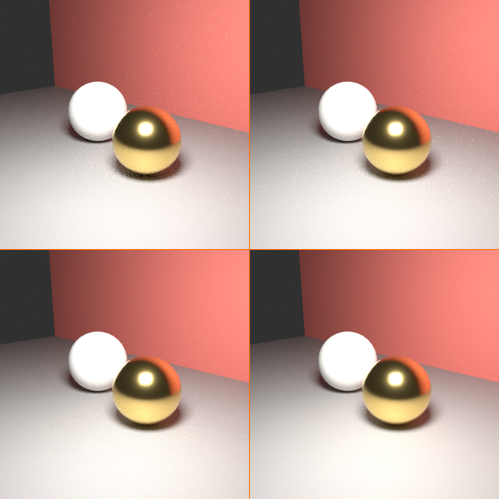
Part 6: Final Render
🖼️ Production Quality Render
Step 1: Final settings
- Samples: 512-1024 (based on tests)
- Resolution: 100%
- Denoising: Enabled
- Clear any render region
Step 2: Render
F12to render- Wait for completion
- Note final render time
Step 3: Save
- Image → Save As
- Name: "cycles_photorealistic.png"
- Format: PNG (lossless quality)
Step 4: Analysis
- Compare to Eevee render (if you have one)
- Notice:
- Glass realism (caustics, refraction)
- Soft, accurate shadows
- Natural bounce light
- Photographic quality

Bonus Challenges
💪 Advanced Exercises
Challenge 1: Caustics showcase
- Position strong sun light through glass
- Aim to create visible caustics on ground
- Increase samples to 1024 for clean caustics
- Compare render time with/without caustics enabled
Challenge 2: Multiple materials
- Add objects with different materials (glass, metal, plastic)
- Create scene showing material variety
- Notice how Cycles handles each realistically
Challenge 3: Optimization experiment
- Render at 2048 samples without denoising
- Render at 256 samples with denoising
- Compare quality and render times
- Experience the denoising revolution firsthand
Challenge 4: Bounce comparison
- Render with Max Bounces: 4
- Render with Max Bounces: 12
- Compare subtle differences
- Understand diminishing returns
Challenge 5: Subsurface scattering
- Create wax or skin-like material
- Enable subsurface scattering
- Backlight object to show translucency
- Appreciate Cycles' organic material handling
Project Success Checklist
✅ Completion Criteria
You've successfully completed this project when you have:
- Created scene with object and environment
- Configured Cycles (GPU, samples, denoising, bounces)
- Set up photorealistic materials (glass/metal)
- Created professional lighting setup
- Optimized settings for reasonable render time
- Rendered final high-quality image
- Saved result and analyzed quality
- Understood Cycles workflow and settings
📚 Lesson Summary
Congratulations! You've mastered Cycles path tracing—the gold standard for photorealistic 3D rendering. You now have the knowledge to create stunning, physically accurate renders.
🎯 Key Takeaways
- Path tracing fundamentals:
- Simulates light physics accurately
- Traces rays backward from camera to light
- Statistical convergence with samples
- Produces photorealistic results
- Samples and denoising:
- 256-512 samples with denoising = production quality
- Denoising reduces needed samples by 4-8x
- OptiX (NVIDIA) or OpenImageDenoise
- Adaptive sampling optimizes automatically
- Light paths critical:
- More bounces = more indirect light
- 4-8 diffuse bounces sufficient usually
- 12 transmission bounces for glass
- Diminishing returns after 12 total bounces
- Advanced effects:
- Caustics (light through glass patterns)
- Subsurface scattering (light in materials)
- Volumes (fog, smoke) - expensive
- All automatic in Cycles
- GPU vs CPU:
- GPU: 3-10x faster (use by default)
- CPU: More memory, slower
- Check scene fits in VRAM
🛠️ Essential Skills You've Developed
- Switching to Cycles and configuring device
- Setting samples appropriately with denoising
- Configuring light paths and bounces
- Creating photorealistic glass and metal materials
- Understanding caustics and when to use them
- Optimizing renders for speed without losing quality
- Troubleshooting common Cycles issues
- Balancing quality vs render time strategically
- Professional Cycles rendering workflow
💭 Core Concepts to Remember
- Denoising changed everything: Modern Cycles workflow is 256-512 samples + denoising, not 4096 samples
- More isn't always better: Diminishing returns on samples and bounces—know when enough is enough
- Glass needs bounces: Transmission bounces (12+) essential for realistic glass rendering
- GPU speed matters: 3-10x faster than CPU makes GPU the default choice
- Optimization is strategy: Focus on high-impact optimizations (samples, denoising, bounces) first
- Physical accuracy requires patience: Cycles is slower than Eevee but produces unmatched realism
⚠️ Common Beginner Mistakes to Avoid
- Not using denoising: Rendering 2048-4096 samples when 256-512 + denoise works
- CPU instead of GPU: Missing 5-10x speedup by not using graphics card
- Excessive bounces: Using 32+ bounces when 12 is sufficient
- No clamping: Fighting fireflies with more samples instead of using indirect clamp
- Forgetting transmission bounces: Glass renders black because bounces too low
- Testing at full resolution: Not using 50% resolution or render region for iteration
- Expecting Eevee speed: Cycles is slower—that's the trade-off for accuracy
🚀 Next Steps in Your Journey
To continue mastering Cycles:
- Practice the workflow:
- Enable Cycles → Configure sampling → Set bounces → Render
- Make this second nature
- Build muscle memory for settings
- Experiment with materials:
- Try different glass types (IOR variations)
- Create various metals (gold, copper, aluminum)
- Practice subsurface materials
- Study caustics:
- Intentionally create caustic effects
- Understand their cost vs benefit
- Learn when they're worth render time
- Compare Eevee and Cycles:
- Render same scene in both
- Understand strengths of each
- Know when to use which engine
- Study photorealism:
- Analyze photographs
- Recreate lighting from photos
- Match CG to photography
🎬 Real-World Applications
How professionals use Cycles:
- Product visualization: E-commerce, marketing, catalogs—photorealistic product shots
- Architectural visualization: Building renders for clients, real estate, competitions
- Jewelry rendering: High-end product shots with accurate gems and metals
- Film VFX: Hero props, CG objects integrated into live footage
- Scientific visualization: Accurate material representation for research
- Still frame perfection: Portfolio pieces, key frames, promotional art
🌟 The Path Tracing Achievement
You've learned the rendering technique that powers photorealistic CGI in films, games, and visualization worldwide. Path tracing represents decades of computer graphics research—from the original algorithms in the 1980s to modern GPU-accelerated implementations. What once required supercomputers and days of rendering time now runs on your desktop in minutes.
You now possess the knowledge to create images indistinguishable from photographs. Use this power to tell stories, showcase products, visualize ideas, and bring imagination to life with photographic realism.
🎓 What's Next?
Completed Module 4: Lighting and Rendering! 🎉
You've finished the Lighting and Rendering module! You now understand:
- All light types and when to use them
- Professional three-point lighting setups
- HDRI and world lighting for instant realism
- Eevee real-time rendering for speed
- Cycles path tracing for photorealism
This foundational knowledge applies to every 3D project you'll create.
Coming Up in Module 5: Camera and Composition
Next, you'll learn how to frame and capture your beautifully-lit scenes:
- Camera basics and settings
- Composition principles (rule of thirds, leading lines)
- Depth of field and focus techniques
- Camera animation and movement
Great lighting means nothing without great composition—let's learn to showcase your work!
✅ Before Moving On
Make sure you can:
- Switch between Eevee and Cycles confidently
- Configure Cycles samples and denoising
- Set up light paths and bounces appropriately
- Create photorealistic glass and metal materials
- Optimize renders for practical speed
- Decide when to use Eevee vs Cycles
- Troubleshoot common rendering issues
You're now a rendering expert—ready for cameras and composition!